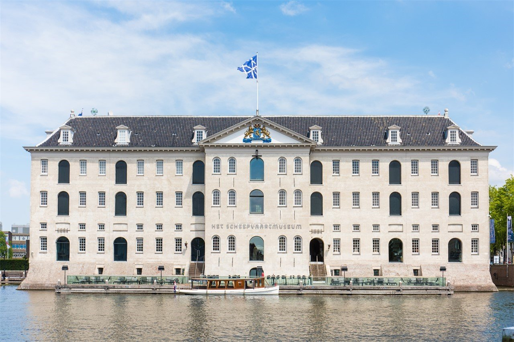
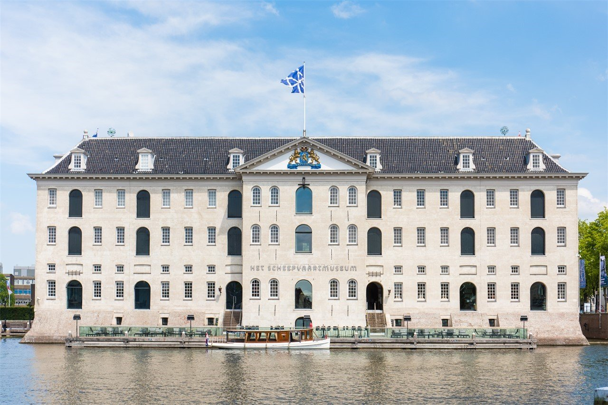

Interactieve tour
Stap in een virtuele tour door het Scheepvaartmuseum.
1/30
Stap in een virtuele tour door het Scheepvaartmuseum.
1/30

De tentoonstelling Amsterdam havenstad laat de eeuwenoude relatie tussen de haven en de stad zien, vanaf het moment dat een dam in de Amstel werd aangelegd tot in de toekomst.
De tentoonstelling ‘het verhaal van de walvis’ laat zien hoe we door de eeuwen heen naar de walvis hebben gekeken. Je leert over de walvisjacht en hoe deze de walvis tot een bedreigde diersoort heeft gemaakt.

Het Scheepvaartmuseum presenteert een unieke grote overzichtstentoonstelling over vader en zoon Willem van de Velde, twee toonaangevende zeeschilders in de zeventiende eeuw met elk een eigen specialisme: penschilderij en olieverfschilderij.

De tentoonstelling Republiek aan Zee laat zien hoe Nederland als maritieme natie is gevormd. Aan de hand van ruim 50 topstukken vertelt de tentoonstelling het verhaal van de Republiek in de 17e en 18e eeuw. De Hoofdgalerij is het startpunt van een museumbezoek.

Philip B: “Hier ben je voor een volledige dag zoet, heel goed ingericht, belicht alle aspecten van de scheepvaart en van de gouden periode. O ok het bezoek aan de replica van het schip Amsterdam aan de steiger is een toppunt.” 5 sterren
Arthur V: “Een erg leuk museum met een mooie en interessante collectie. Het geeft een goed beeld van de historie van de scheepvaart in Nederland. Vooral de schepen buiten zijn ook erg leuk om te bezoeken.” 5 sterren
Het Scheepvaartmuseum is een Nederlands museum in Amsterdam dat vertelt over de scheepvaart en maritieme geschiedenis. Het Scheepvaartmuseum wat vroeger het “Nederlands Scheepvaartmuseum Amsterdam” heten was origineel in 1916 opgericht door de eigenares van een van de meest vooraanstaande maritieme collecties ter wereld. Sinds 1973 is het museum gevestigd in 's Lands Zeemagazijn aan het Oosterdok bij het ij in Amsterdam. Kroonprinses Beatrix heropende het museum in april van dat jaar op de nieuwe locatie. Tijdens een grote renovatie tussen 2007 en 2011 was het museum voor het publiek gesloten. Na de ingrijpende verbouwing is het museum sinds oktober 2011 weer open. Ook de replica van de Oost-indiëvaarder Amsterdam ligt sindsdien weer aan de steiger bij Het Scheepvaartmuseum.